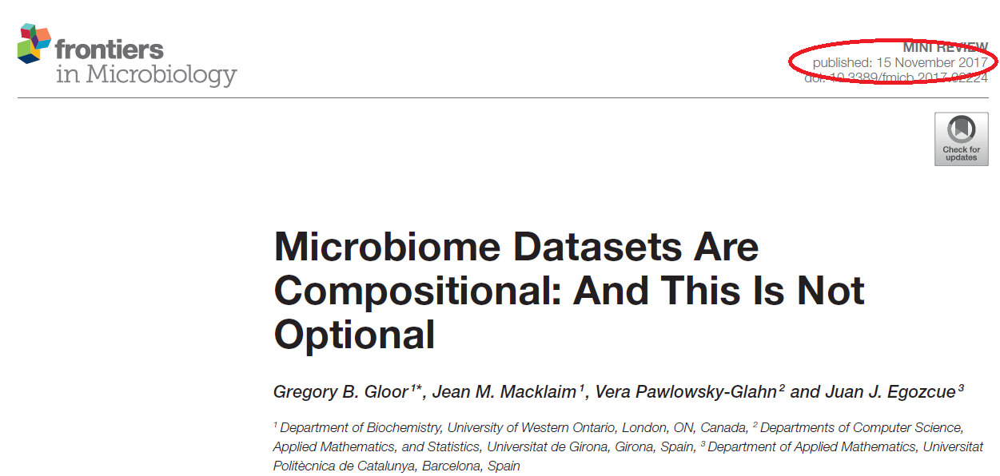

1 1. Los datos de secuenciación son composicionales 🤯

Los datos obtenidos después de la secuenciación no son equivalentes a los datos ecológicos.
En un estudio ecológico es posible que coexistan muchas especies diferentes y su abundacia absoluta puede ser importante.
En los datos de secuenciación de alto rendimiento (HTS ):
- El número de lecturas no representa la abundancia total o absoluta en el ecosistema. El secuenciador solo puede proporcionar lecturas hasta su capacidad.
La frecuencia de lecturas observadas en un experimento de HTS es una muestra aleatoria de tamaño fijo de la abundancia relativa de las moléculas en el ecosistema subyacente.
Esto se reconoce implícitamente cuando los datos del microbioma se convierten en valores de abundancia relativa o conteos normalizados,o se “enrarecen” (rarefying). Ninguno de estos enfoques corrige la la composicionalidad
Los datos que se describen de forma natural como proporciones o probabilidades, o con una suma constante o irrelevante, se denominan datos composicionales.
Los datos de composición contienen información sobre las relaciones entre las partes.
Podemos ver la diferencia entre conteos y proporciones comparando los datos de tres muestras en el gráfico que se presenta a continuación.
- Los diagramas de barras que se presentan a continuación muestran la diferencia entre el conteo de moléculas y la proporción de moléculas para dos características, A y B en tres muestras.
Observa que las muestras 2 y 3 tienen las mismas abundancias proporcionales, aunque tengan conteos absolutos diferentes antes de la secuenciación.
En la tabla podemos observar que la relación entre la abundancia absoluta y la abundancia relativa cambia de manera significativa.
1.1 2. Problemas que surgen cuando no se utiliza el paradigma composicional 😵
- Trabajar con proporciones induce correlación espuria (Pearson 1896).
Dos o más OTUs estarán correlacionados simplemente porque los datos han sido transformados a una suma constante.
- Trabajar con proporciones induce incoherencia subcomposicional
No importa el tipo de correlación: Spearman, Pearson, etc
Comprender que existe un problema de correlación es importante porque ésta juega un rol fundamental en las técnicas clásicas de análisis de datos multivariantes como clustering, MDS, network analysis.
- Matrices de distancia o dissimilaridad después de la normalización no toman en cuenta la naturaleza composicional de los datos
El número total de recuentos observados (a menudo denominado como profundidad de lectura) es un factor de confusión importante para los cálculos de distancia o disimilitud.
Los primeros intentos en el campo del microbioma utilizaron la “rarefacción” o el submuestreo de cada muestra a una profundidad de lectura común para intentar corregir este problema. El uso del submuestreo resulta en una pérdida de información y precisión.
La normalización de recuentos se ha utilizado y existen varios métodos: la media truncada (TMM) y el método de la mediana. Ambos son similares a las transformaciones de un log-ratios, pero son menos adecuados en conjuntos de datos muy asimétricos o dispersos.
Estas transformaciones son además indeseables, ya que el número de recuentos observados por el instrumento, por diseño, no puede contener ninguna información sobre el número real de moléculas en el entorno, y porque el investigador interpreta los resultados como recuentos en lugar de relaciones logarítmicas.
Distribución de las tasas de falsos positivos en réplicas simuladas de datos transformados y no transformados (Nearing et al. Nat.Comm 2022)